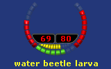

This option allows you to choose this style for the Floating Health, Endurance, and Power windows.
This split ring floating window shows the Target's health on the left and Player's health on the right. The Player's endurance and power levels are shown along the bottom of the ring.

Note: Most of the window is click through meaning you can select an object on your screen inside the window. To move the window, click and drag the button that appears when you hover over the area where the endurance and power status is displayed. A good location for the window on your screen is centered around your character's feet.